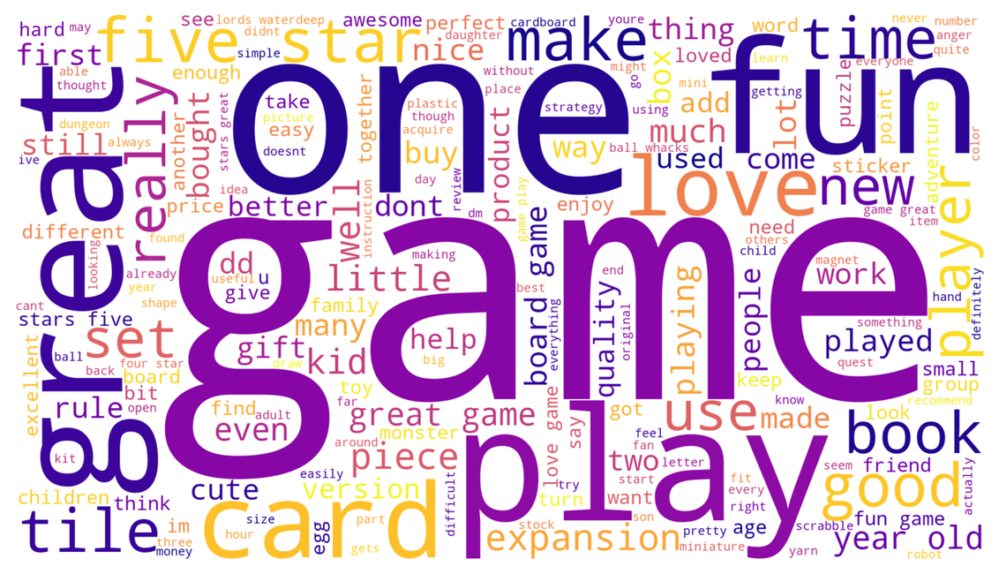

Business Context & Problem
Analysed Turtle Games' customer dataset to explain and predict how customers accumulate loyalty points, segment the customer base into actionable groups, and understand what customers say in their reviews — to inform product and marketing decisions.
Technical Execution & Tools Used
- Python & R — multiple linear regression on Customer Score and Annual Income to explain loyalty points.
- scikit-learn — Decision Tree Regressor on the same features, and K-Means clustering with k=5 validated by the Elbow and Silhouette methods.
- NLP (TextBlob & VADER) — sentiment analysis and word-frequency analysis of customer reviews.
Key Business Insights & Impact
- Loyalty drivers: on their own, Customer Score explained 45% of the variance in loyalty points and Annual Income 38%; combining both in a multiple linear regression raised this to 83%.
- Best model: the Decision Tree Regressor reached 97.7% accuracy on the same two features and confirmed gender and age had zero predictive power.
- Most valuable segment: K-Means identified five customer groups by income and engagement; customers scoring 67+ with income above £74k earn around 2.5x the loyalty points of the rest.
- Customer sentiment: 88.8% of reviews were positive, driven by value, fun, and educational framing; the main negative themes were unclear instructions, age-mislabelling, and quality control.
- Strategic recommendation: fed the segmentation and review findings directly into product and marketing recommendations — focusing loyalty efforts on the high-value segment and addressing the recurring complaints around instructions, age labelling, and quality.
| Segment | n | Income | Score | Profile |
|---|---|---|---|---|
| Group 1 | 774 | £40k–£65k | 40–60 | Largest group — moderate spender, moderate engagement |
| Group 2 | 356 | £55k–£100k+ | 70–97 | Top-tier — strong earners who spend and engage heavily |
| Group 3 | 330 | £55k–£105k+ | 1–40 | Earn well but disengaged — worth a deep dive |
| Group 4 | 271 | £10k–£35k | 3–40 | Least engaged and lowest spending |
| Group 5 | 269 | £10k–£35k | 65–99 | Loyal despite low income — value-driven engagement |



Decision tree vs. linear regression — which model actually explains loyalty points?
X_train, X_test, y_train, y_test = train_test_split(X, y, test_size=0.3, random_state=42)
reg_final = DecisionTreeRegressor(max_depth=3, random_state=0)
reg_final.fit(X_train, y_train)
y_pred_final = reg_final.predict(X_test)
r2_final = r2_score(y_test, y_pred_final)
print(f'R² Score: {r2_final:.4f}') # 0.9774
print(f'Accuracy: {r2_final * 100:.2f}%') # 97.74% -- vs. 82.7% for the linear model
importances = pd.DataFrame({'feature': X_train.columns, 'importance': reg_final.feature_importances_})
importances.sort_values('importance', ascending=False)
# feature importance
# annual_income (k£) 0.525
# customer_score (1-100) 0.475
# gender 0.000
# age 0.000View full Python notebook
# ### LSE Data Analytics Online Career Accelerator
# # DA301: Advanced Analytics for Organisational Impact
# ## Assignment template
# ### Scenario
# You are a data analyst working for Turtle Games, a game manufacturer and retailer. They manufacture and sell their own products, along with sourcing and selling products manufactured by other companies. Their product range includes books, board games, video games and toys. They have a global customer base and have a business objective of improving overall sales performance by utilising customer trends. In particular, Turtle Games wants to understand:
# - how customers accumulate loyalty points (Week 1)
# - exploring the structure using decision trees (Week 2)
# - exploring clusters in customer behaviour (Week 3)
# - can social data (e.g. customer reviews) be used in marketing campaigns (Week 4)
# - loading, transforming and visualising data in R (Week 5)
# - statistical analysis and modelling in R (Week 6)
# # Week 1 assignment: Linear regression using Python
# The marketing department of Turtle Games prefers Python for data analysis. As you are fluent in Python, they asked you to assist with data analysis of social media data. The marketing department wants to better understand how users accumulate loyalty points. Therefore, you need to investigate the possible relationships between the loyalty points, age, remuneration, and spending scores. Note that you will use this data set in future modules as well and it is, therefore, strongly encouraged to first clean the data as per provided guidelines and then save a copy of the clean data for future use.
# ## Instructions
# 1. Load and explore the data.
# 1. Create a new DataFrame (e.g. reviews).
# 2. Sense-check the DataFrame.
# 3. Determine if there are any missing values in the DataFrame.
# 4. Create a summary of the descriptive statistics.
# 2. Remove redundant columns (`language` and `platform`).
# 3. Change column headings to names that are easier to reference (e.g. `renumeration` and `spending_score`).
# 4. Save a copy of the clean DataFrame as a CSV file. Import the file to sense-check.
# 5. Use linear regression and goodness of fit metrics to evaluate possible linear relationships between loyalty points and age/renumeration/spending scores to determine whether these can be used to predict the loyalty points.
# 1. Specify the independent and dependent variables.
# 2. Create the OLS model.
# 3. Extract the estimated parameters, standard errors, and predicted values.
# 4. Generate the regression table based on the X coefficient and constant values.
# 5. Plot the linear regression and add a regression line.
# 6. Include your insights and observations.
# ## 1. Load and explore the data
# Install the statsmodel package
!pip install statsmodels
# Imports
import numpy as np
import pandas as pd
import matplotlib.pyplot as plt
import seaborn as sns
import statsmodels.api as sm
from statsmodels.formula.api import ols
# Linear regression
import sklearn
from sklearn import datasets
from sklearn import linear_model
from statsmodels.stats.outliers_influence import variance_inflation_factor
from sklearn.model_selection import train_test_split
from sklearn import metrics
from sklearn.linear_model import LinearRegression
# Note: indicates situations that aren't necessarily exceptions.
import warnings
warnings.filterwarnings('ignore')
# Load the CSV file(s) as reviews.
reviews = pd.read_csv('turtle_reviews.csv')
# View the DataFrame.
reviews.info()
reviews
# Any missing values?
reviews.isnull().sum()
# Explore the data.
# Basic descriptive statistics.
reviews.describe()
# Understanding the correlation between only numeric only column.
reviews.corr(numeric_only=True)
# #### Findings from above correlations
# 1. Loyalty points are largely affected by high salary and high spending score.
# 2. Age has almost no correlation with almost everything.
# #### -> These need to be tested
# ## 2. Drop columns
# Drop unnecessary columns.
reviews_new=reviews.drop(columns=['language', 'platform'])
# View column names.
reviews_new
# ## 3. Rename columns
# Rename the column headers.
reviews_new.rename(columns={'remuneration (k£)':'annual_income (k£)',
'spending_score (1-100)':'customer_score (1-100)'}, inplace=True)
# View column names.
reviews_new
# ## 4. Save the DataFrame as a CSV file
# Create a CSV file as output
reviews_new.to_csv('turtle_reviews_new.csv', index=False)
# Import new CSV file with Pandas.
turtle= pd.read_csv('turtle_reviews_new.csv')
# View DataFrame.
turtle.info()
turtle
# ## 5. Linear regression
# ### 5a) spending vs loyalty
# Define independent variable.
x1 = turtle['customer_score (1-100)'].values.reshape(-1, 1)
# Define dependent variable.
y1 = turtle['loyalty_points']
# Create model and print summary of metrics.
# Run the OLS test
f = 'y1 ~ x1'
test1 = ols(f, data=turtle).fit()
# View the output
test1.summary()
# Check for linearity
plt.scatter(x1,y1)
# Extract the estimated parameters.
print("R-squared value: ", test1.params)
# Extract the standard errors.
print("Standard errors: ", test1.bse)
# Extract the predicted values.
print("Predicted values: ", test1.predict())
# Set the X coefficient and the constant to generate the regression table.
# Set the coefficient to 33.061693 and the constant to -75.052663 to generate the regression table
y1_pred = (-75.052663) + 33.061693 * turtle['customer_score (1-100)']
# View the output.
y1_pred
# Plot the data points with a scatterplot
plt.scatter(x1,y1)
# Plot the graph with the regression line (in black)
plt.plot(x1, y1_pred, color='black')
# Set the x and y limits on the axes.
plt.xlim(0)
plt.ylim(0)
# Adding more information to the plot
plt.xlabel('Customer_Score', fontsize=14, fontweight='bold')
plt.ylabel('Loyalty_Points', fontsize=14, fontweight='bold')
plt.title('Customer Score vs Loyalty Points', fontsize= 18, fontweight='bold')
# View the plot
plt.savefig('customer_score_vs_loyalty_points.png', dpi=300)
plt.show()
# ### 5b) renumeration vs loyalty
turtle
# Define independent variable.
x2 = turtle['annual_income (k£)']
# Define dependent variable.
y2 = turtle['loyalty_points']
# Create model and print summary of metrics.
# Run the OLS test
f2 = 'y2 ~ x2'
test2 = ols(f2, data=turtle).fit()
# View the output
test2.summary()
# Extract the estimated parameters.
print("Parameters: ", test2.params)
# Extract the standard errors.
print("Standard errors: ", test2.bse)
# Extract the predicted values.
print("Predicted values: ", test2.predict())
# Set the the X coefficient and the constant to generate the regression table.
# Set the coefficient to 34.187825 and the constant to -65.686513 to generate the regression table
y2_pred = (-65.686513) + 34.187825 * turtle['annual_income (k£)']
# View the output.
y2_pred
# Plot the data points with a scatterplot
plt.scatter(x2,y2)
# Plot the graph with the regression line (in orange)
plt.plot(x2, y2_pred, color='orange')
# Set the x and y limits on the axes.
plt.xlim(0)
plt.ylim(0)
# Adding more information to the plot
plt.xlabel('Annual Income (k£)', fontsize=14, fontweight='bold')
plt.ylabel('Loyalty_Points', fontsize=14, fontweight='bold')
plt.title('Annual Income vs Loyalty Points', fontsize= 18, fontweight='bold')
# View the plot
plt.savefig('annual_income_vs_loyalty_points.png', dpi=300)
plt.show()
# ### 5c) age vs loyalty
# Define independent variable.
x3 = turtle['age']
# Define dependent variable.
y3 = turtle['loyalty_points']
# Create model and print summary of metrics.
# Create formula and pass through OLS methods.
f3 = 'y3 ~ x3'
test3 = ols(f3, data= turtle).fit()
# Print the regression table
test3.summary()
# Extract the estimated parameters.
print("Parameters: ", test3.params)
# Extract the standard errors.
print("Standard errors: ", test3.bse)
# Extract the predicted values.
print("Predicted values: ", test3.predict())
# Set the X coefficient and the constant to generate the regression table
# Set the coefficient to -4.012805 and the constant to 1736.517739 to generate the regression table
y3_pred = 1736.517739 - 4.012805 * turtle['age']
# View the output.
y3_pred
# Plot the data points with a scatterplot
plt.scatter(x3,y3)
# Plot the graph with the regression line (in orange)
plt.plot(x3, y3_pred, color='red')
# Set the x and y limits on the axes.
plt.xlim(0)
plt.ylim(0)
# Adding more information to the plot
plt.xlabel('Age (k£)', fontsize=14, fontweight='bold')
plt.ylabel('Loyalty_Points', fontsize=14, fontweight='bold')
plt.title('Age vs Loyalty Points', fontsize= 18, fontweight='bold')
# View the plot
plt.savefig('age_vs_loyalty_points.png', dpi=300)
plt.show()
# ## 6. Observations and insights
# ***Your observations here...***
# #### Customer Score vs Loyalty Points:
# - 45% of the total variability of loyalty points is explained by customer's spending nature and behaviour.
# - Strong positive relationship.
# - The upward trend is consistent up to a customer score of 60. When the customer score is more than 70, it is shown as the loyalty points they accumulated expands sharply -> this could be understood adding more variables to understand.
# - 2 visible groups: 1 group with high customer score and high loyalty points but also 1 group with low customer score yet low loyalty points.
# #### Annual Income vs Loyalty Points:
# - 38 % of the total variability of loyalty points is explained by annual income of customers.
# - Positive correlation.
# - When earning more than 60K, customers split into 2 groups: 1 group with high accumlated loyalty points and 1 group with low loyalty points
# -> High income does not fully reflect loyalty engagement.
# #### Age vs Loyalty Points:
# Age barely got any impact or correlation to loyalty points.
# -> No predictive power
# #### What could be explored further and suggested future actions.
# 1. As Customer Score shows a strong relationship towards loyalty points, I would combine this aspect with other aspects such as annual income in order to build a more effective model.
# 2. Understanding why there are a group of customer showing high customer score and high income yet low loyalty points -> is there any reason behind this pattern?
# To be more specific:
# - 55% total variability of loyalty points unexplained by customer score
# - 62% total variability of loyalty points unexplained by annual income
# -> Many other unseen factors might affect overall loyalty points.
# 4. Consider to remove age from the model as this factor might not be beneficial in optimizing the model.
# 5. Customer segmentation can be considered
# # Week 2 assignment: Exploring the structure using decision trees.
# The team wants you to use decision trees to attempt to better understand the structure found in the data. You need to grow and prune a decision tree regressor and then visualise and interpret the output.
# Make sure to comment on the potential usefulness in decision-making processes and your observations regarding the model.
# ## Instructions
# 1. Prepare the data for creating your decision tree.
# 1. Import the CSV file you have prepared in Week 1.
# 2. Create a new DataFrame with the appropriate columns.
# 1. Specify that loyalty points is the target variable (Y) and should be excluded from your input data.
# 2. Specify X for the independent variables and y as the dependent variable. Therefore, df\[cols\] will be the independent variables and the column containing loyalty points the dependent variable.
# 3. Explore the new DataFrame.
# 2. Split the data set into a train and test sets for both X and y at a 70:30 ratio. As previously, random_state=42.
# 3. Create a decision tree regressor to explore the impact of other features on the loyalty points.
# 1. Import the DecisionTreeRegressor class from the sklearn.tree library.
# 2. Create a variable (e.g. regressor) to store the DecisionTreeRegressor() class. (As previously, random_state=42.).
# 3. Fit the regressor object to the data set with the fit() function.
# 4. Remember to prune your tree using basic pruning strategies and compare the performance before and after applying the pruning strategy.
# 5. Plot the final decision tree.
# 4. Fit a final model and interpret the output.
# 1. Justify your selection of pruning strategy implemented and interpret the output.
# 2. Evaluate the usefulness of the obtained result and interpret the tree and how it could be used to inform business decisions in the organisation.
# 5. Summarise (150–200 words) the most important business insights, anything you would like to explore further, and suggested future actions.
# Back up your work to a safe location. This will allow you to revert to a previous state in the case of making a mistake in the code or deleting a section by mistake. (A simple way of doing this is to save or email a compressed version to yourself at frequent intervals.)
# ## 1. Load and prepare the data
# Import all the necessary packages
import numpy as np
import pandas as pd
from sklearn.tree import DecisionTreeRegressor, plot_tree
from sklearn.metrics import accuracy_score, confusion_matrix, ConfusionMatrixDisplay
from sklearn.metrics import classification_report
from sklearn.model_selection import train_test_split
import statsmodels.api as sm
import warnings
import matplotlib.pyplot as plt
# Settings for the notebook.
warnings.filterwarnings("ignore")
plt.rcParams['figure.figsize'] = [15, 10]
# Create your new DataFrame.
df = pd.read_csv('turtle_reviews_new.csv')
# View the DataFrame
df
df['gender'].unique()
# ### Transform categorical string values to numeric values for modelling
# #### Gender column
# Decided to make changes in the 'gender' column to change from current string values to numeric values for modelling:
# + 'Male' replaced by 1
# + 'Female' replaced by 0
# Update the gender column with male = 1, and female = 0
df['gender'] = df['gender'].map({'Male':1, 'Female':0})
# View the output
df
# #### Education column
# Realizing that the current education types follow the natural and clear from low to high order, decided to change from string values to numeric values. In particular:
# + "Basic" : 0
# + "Diploma": 1
# + Graduate": 2
# + "Postgraduate": 3
# + "PhD": 4
df['education'].value_counts()
df['education'].unique().tolist()
# Plot graph for individual columns to understand the distribution
# Gender male = 1, and female = 0
plt.rcParams['figure.figsize'] = [6, 3]
sns.countplot(x=df['gender'])
plt.show()
sns.countplot(x=df['education'])
plt.show()
# Update the gender column with "Basic" = 0 , "Diploma" =1, Graduate", "Postgraduate" = 3 and "PhD": 4
df['education'] = df['education'].map({'Basic':0, 'diploma':1,
'graduate':2,'postgraduate':3, 'PhD':4})
# View the output
df
df.columns.tolist()
# Specify Y.
y = df['loyalty_points']
# Specify X.
cols = ['gender','age','annual_income (k£)','customer_score (1-100)']
# cols1 = ['age','annual_income (k£)','customer_score (1-100)']
X = df[cols]
# Review X and Y.
X.shape, y.shape
# ## 2. Create train and test data sets.
# Split the data into test and train data.
X_train, X_test, y_train, y_test = train_test_split(X, y, test_size= 0.3, random_state= 42)
X_train.shape, y_train.shape, X_test.shape, y_test.shape
# ## 3. Create Decision tree regressor
# Create your decision tree regressor.
from sklearn import tree
my_tree = DecisionTreeRegressor(random_state=42, max_depth=7)
# Train the Decistion Tree Regressor
reg = my_tree.fit(X_train, y_train)
# Predict the response for the dataset
y_pred = reg.predict(X_test)
# Scattter plot for predicted and tested value
plt.scatter(y_test, y_pred)
plt.xlabel("True loyalty points from test set")
plt.ylabel("Predicted prices from trained model")
plt.title(" Predicted vs Tested Royalty Points")
plt.savefig('decision_tree_regression_1.png', dpi=300)
plt.show()
# Getting mean absolute error
from sklearn.metrics import mean_absolute_error as MAE
err = MAE(y_test, y_pred)
print("Mean absolute error of test set is: ", err)
# Plot the tree
plt.figure(figsize=(40, 20))
tree.plot_tree(reg, filled=True)
plt.savefig('decision_tree_regressor_2.png', dpi=800)
# #### Determine the accuracy of the model
accuracy = pd.DataFrame({'Actual Value': y_test, 'Predicted Values': y_pred})
print(accuracy)
print('Mean Absolute Error:', metrics.mean_absolute_error(y_test, y_pred))
print('Mean Squared Error:', metrics.mean_squared_error(y_test, y_pred))
print('Root Mean Squared Error:', np.sqrt(metrics.mean_squared_error(y_test, y_pred)))
from sklearn.metrics import r2_score
r2 = r2_score(y_test, y_pred)
print(f'R² Score: {r2:.4f}')
print(f'Accuracy: {r2 * 100:.2f}%')
# ### Scenario 2: Test using variables with 3 columns only: age, customer_score, annual income
# Specify y.
y1 = df['loyalty_points']
# Specify X.
cols1 = ['age','annual_income (k£)','customer_score (1-100)']
X1 = df[cols1]
print(X1)
print(y1)
# Split the data into test and train data.
X1_train, X1_test, y1_train, y1_test = train_test_split(X1, y1, test_size= 0.3, random_state= 42)
X1_train.shape, y1_train.shape, X1_test.shape, y1_test.shape
# Create your decision tree regressor.
from sklearn import tree
my_tree_1 = DecisionTreeRegressor(random_state=42, max_depth=7)
# Train the Decistion Tree Regressor
reg_1 = my_tree_1.fit(X1_train, y1_train)
# Predict the response for the dataset
y1_pred = reg_1.predict(X1_test)
# Scattter plot for predicted and tested value
plt.scatter(y1_test, y1_pred)
plt.xlabel("True loyalty points from test set")
plt.ylabel("Predicted prices from trained model")
plt.title(" Predicted vs Tested Royalty Points")
plt.savefig('decision_tree_regression_3.png', dpi=300)
plt.show()
# Plot the tree
plt.figure(figsize=(40, 20))
tree.plot_tree(reg_1, filled=True)
plt.savefig('decision_tree_regressor_4.png', dpi=800)
accuracy_1 = pd.DataFrame({'Actual Value': y1_test, 'Predicted Values': y1_pred})
print(accuracy_1)
print('Mean Absolute Error:', metrics.mean_absolute_error(y1_test, y1_pred))
print('Mean Squared Error:', metrics.mean_squared_error(y1_test, y1_pred))
print('Root Mean Squared Error:', np.sqrt(metrics.mean_squared_error(y1_test, y1_pred)))
from sklearn.metrics import r2_score
r2_1 = r2_score(y1_test, y1_pred)
print(f'R² Score: {r2_1:.4f}')
print(f'Accuracy: {r2_1 * 100:.2f}%')
# ### Scenario 3: Test using variables with 2 columns only: customer_score, annual income
# Specify y.
y2 = df['loyalty_points']
# Specify X.
cols2 = ['annual_income (k£)','customer_score (1-100)']
X2 = df[cols2]
print(X2)
print(y2)
# Split the data into test and train data.
X2_train, X2_test, y2_train, y2_test = train_test_split(X2, y2, test_size= 0.3, random_state= 42)
X2_train.shape, y2_train.shape, X2_test.shape, y2_test.shape
# Create your decision tree regressor.
from sklearn import tree
my_tree_2 = DecisionTreeRegressor(random_state=42, max_depth=7)
# Train the Decistion Tree Regressor
reg_2 = my_tree_2.fit(X2_train, y2_train)
# Predict the response for the dataset
y2_pred = reg_2.predict(X2_test)
# Scattter plot for predicted and tested value
plt.scatter(y2_test, y2_pred)
plt.xlabel("True loyalty points from test set")
plt.ylabel("Predicted prices from trained model")
plt.title(" Predicted vs Tested Royalty Points")
plt.savefig('decision_tree_regression_5.png', dpi=300)
plt.show()
# Plot the tree
plt.figure(figsize=(40,20))
tree.plot_tree(reg_2, filled=True)
plt.savefig('decision_tree_regressor_6.png', dpi=800)
accuracy_2 = pd.DataFrame({'Actual Value': y2_test, 'Predicted Values': y2_pred})
print(accuracy_2)
print('Mean Absolute Error:', metrics.mean_absolute_error(y2_test, y2_pred))
print('Mean Squared Error:', metrics.mean_squared_error(y2_test, y2_pred))
print('Root Mean Squared Error:', np.sqrt(metrics.mean_squared_error(y2_test, y2_pred)))
from sklearn.metrics import r2_score
r2_2 = r2_score(y2_test, y2_pred)
print(f'R² Score: {r2_2:.4f}')
print(f'Accuracy: {r2_2 * 100:.2f}%')
# #### Interpret model and note observations.
# - Results when testing with 4 columns: age, gender, customer_Score, income, max_depth=7
# Accuracy: 97.74%
# - Result when testing with 3 columns: age, customer_score, income, max_depth = 7
# Accuracy: 97.73%
# - Result when testing with 2 columns: customer_score, income, max_depth = 7
# Accuracy: 97.02%
# The depth at 7 gives high accuracy, will try with different max depth length later to decide how to prune the tree
# ## 4. Fit and plot final model.
# Prune the model.
# Determine the optimal value for max depth, then prune the decision tree
# One approach often applied is to look at a range of values for the parameter under investigation
# List of values to try for max_depth:
max_depth_range = list(range(1, 7))
# have a loop that fits decision trees for different 'max_depth', and calculate/store the accuracy of each tree
accuracy_3 = []
for depth in max_depth_range:
reg_3 = DecisionTreeRegressor(max_depth = depth, random_state = 0)
reg_3.fit(X_train, y_train)
score = reg_3.score(X_test, y_test)
accuracy_3.append(score)
# Plot accuracy values across the range of depth values evaluated
plt.rcParams['figure.figsize'] = [10, 5]
accuracy_3 = pd.DataFrame(accuracy_3)
accuracy_3.plot()
plt.show()
# Split the data into test and train data.
X_train_final, X_test_final, y_train_final, y_test_final = train_test_split(X, y, test_size= 0.3, random_state= 42)
X_train_final.shape, y_train_final.shape, X_test_final.shape, y_test_final.shape
# Fit and plot final model.
# Create your decision tree regressor.
from sklearn import tree
my_tree_final= DecisionTreeRegressor(random_state=42, max_depth=3)
# Train the Decistion Tree Regressor
reg_final = my_tree_final.fit(X_train_final, y_train_final)
# Predict the response for the dataset
y_pred_final = reg.predict(X_test_final)
# Scattter plot for predicted and tested value
plt.scatter(y_test_final, y_pred_final)
plt.xlabel("True loyalty points from test set")
plt.ylabel("Predicted prices from trained model")
plt.title(" Predicted vs Tested Royalty Points")
plt.savefig('decision_tree_regression_3.png', dpi=300)
plt.show()
# Plot the tree
plt.figure(figsize=(40,20))
tree.plot_tree(reg_final, feature_names=cols, filled=True)
plt.savefig('decision_tree_regressor_final.png', dpi=800)
print("Tree depth =", reg_final.get_depth(),'\n'
"Number of leaves =", reg_final.get_n_leaves())
from sklearn.metrics import r2_score
r2_final = r2_score(y_test_final, y_pred_final)
print(f'R² Score: {r2_final:.4f}')
print(f'Accuracy: {r2_final * 100:.2f}%')
# Finding out about Feature importance to help in the decision making process
reg_input = reg_final
importances = pd.DataFrame({'feature':X_train_final.columns,'importance':np.round(reg_input.feature_importances_,3)})
importances = importances.sort_values('importance',ascending=False)
importances
accuracy_final = pd.DataFrame({'Actual Value': y_test_final, 'Predicted Values': y_pred_final})
print(accuracy_final)
print('Mean Absolute Error:', metrics.mean_absolute_error(y_test_final, y_pred_final))
print('Mean Squared Error:', metrics.mean_squared_error(y_test_final, y_pred_final))
print('Root Mean Squared Error:', np.sqrt(metrics.mean_squared_error(y_test_final, y_pred_final)))
# ## 5. Discuss: Insights and observations
# ***Your observations here...***
# #### Interpret model and note observations.
# At first, I studied all variables possible: gender, age, customer score and, annual income. However, by plotting the trees using different variables combinatvariable combinationsion, seeing statistical results, and understanding the importance of each variable in the tree model, my findings would be:
# - Only 2 features actually have an impact on loyalty points: annual income and customer score:
# + annual income slightly affects more than the other: 52.5%
# + customer score: 47.5%
# - Gender and age are irrelevant in this case as they showed zero predictive power, the result of the predictive model with or without their presence remains unchanged
# -> We should be targeting to understand how customer score and annual income might affect loyalty points, and demographics such as gender and age play no important role in defining loyalty points.
# ### Decision Tree Analysis
# - The tree decision making process was based entirely on customer score and annual income, no gender or age was used as they do not have predictive power.
# - Value: loyalty points prediction
# - Root note: customer score <=67, 1400 training samples split into 982 low score (<=67), and 418 high score (>67)
# + customer score than 67: loyalty points 2767
# + customer score less than 67: loyalty points 1081
# -> Customers with higher scores earn on average 2.5 more loyalty points than those with scores less than 67.
# - Highest score customer(customer score above 67) with highest income (more than 74k) earns around 4,849 points: this can be considered the most valuable customer segment.
# - 8 customer groups were defined based on a combination of income and customer score.
# -> Suggestion: any loyalty program should focus on encouraging customer to increase their scores and targeting on higher income brackets.
# #
# # Week 3 assignment: Clustering with *k*-means using Python
# The marketing department also wants to better understand the usefulness of renumeration and spending scores but do not know where to begin. You are tasked to identify groups within the customer base that can be used to target specific market segments. Use *k*-means clustering to identify the optimal number of clusters and then apply and plot the data using the created segments.
# ## Instructions
# 1. Prepare the data for clustering.
# 1. Import the CSV file you have prepared in Week 1.
# 2. Create a new DataFrame (e.g. `df3`) containing the `renumeration` and `spending_score` columns.
# 3. Explore the new DataFrame.
# 2. Plot the renumeration versus spending score.
# 1. Create a scatterplot.
# 2. Create a pairplot.
# 3. Use the Silhouette and Elbow methods to determine the optimal number of clusters for *k*-means clustering.
# 1. Plot both methods and explain how you determine the number of clusters to use.
# 2. Add titles and legends to the plot.
# 4. Evaluate the usefulness of at least three values for *k* based on insights from the Elbow and Silhoutte methods.
# 1. Plot the predicted *k*-means.
# 2. Explain which value might give you the best clustering.
# 5. Fit a final model using your selected value for *k*.
# 1. Justify your selection and comment on the respective cluster sizes of your final solution.
# 2. Check the number of observations per predicted class.
# 6. Plot the clusters and interpret the model.
# ## 1. Load and explore the data
# Import necessary libraries.
import numpy as np
import pandas as pd
import matplotlib.pyplot as plt
import matplotlib.cm as cm
import seaborn as sns
from sklearn.preprocessing import StandardScaler
from sklearn.cluster import KMeans
from sklearn.metrics import silhouette_score
from sklearn.metrics import accuracy_score
from scipy.spatial.distance import cdist
import warnings
warnings.filterwarnings('ignore')
# Load the CSV file(s) as df2.
df2= pd.read_csv('turtle_reviews_new.csv')
# View DataFrame.
df2
df2.columns.tolist()
df2
# Drop unnecessary columns.
df3 = df2[['annual_income (k£)','customer_score (1-100)','gender', 'education']]
# View DataFrame.
df3
# Explore the data.
df3.info()
# Descriptive statistics.
df3.describe()
# ## 2. Plot
# Create a scatterplot with Seaborn, using gender=hue
sns.scatterplot(x='annual_income (k£)', y='customer_score (1-100)', hue='gender',data=df3)
# Create a scatterplot with Seaborn, using gender=education
sns.scatterplot(x='annual_income (k£)', y='customer_score (1-100)', hue='education',data=df3)
# Create a pairplot with Seaborn using hue='gender'
x= df3[['annual_income (k£)', 'customer_score (1-100)']]
sns.pairplot(df3, vars=x, hue='gender', diag_kind='kde')
# Create a pairplot with Seaborn using hue='education'
x= df3[['annual_income (k£)', 'customer_score (1-100)']]
sns.pairplot(df3, vars=x, hue='education', diag_kind='kde')
# ## 3. Elbow and silhoutte methods
# Determine the number of clusters: Elbow method.
ss= []
for i in range(1,11):
kmeans= KMeans(n_clusters=i,
init='k-means++',
max_iter=300,
n_init=10,
random_state=0)
kmeans.fit(x)
ss.append(kmeans.inertia_)
# Plot the elblow method: Plot the sum of squared distances from each point to its assigned centre
plt.plot(range(1,11), ss, marker='o')
# Insert labels and title
plt.title("The Elbow Method")
plt.xlabel("Number of clusters")
plt.ylabel("SS Distance")
plt.savefig('elbow_method.png',dpi=300)
plt.show()
# Determine the number of clusters: Silhouette method.
# Find the range of clusters to be used using silhoutte method
sil=[]
kmax=10
for k in range(2, kmax+1):
kmeans_s = KMeans(n_clusters=k).fit(x)
labels= kmeans_s.labels_
sil.append(silhouette_score(x, labels, metric='euclidean'))
# Plot the silhouette method.
plt.plot(range(2, kmax+1), sil, marker='o')
# Insert the labels and title.
plt.title("The Silhouette Method")
plt.xlabel("Number of clusters")
plt.ylabel("Sil")
plt.savefig('silouehette_method.png',dpi=300)
plt.show()
# #### Findings:
# - Elbow method: curve started to flatten at k=5
# - Silhouette method: peaks at 5
# -> 5 might be the optimal of clusters for current data
# -> Customers are divided into 5 different group segments based on annual income and customer score
# ## 4. Evaluate k-means model at different values of *k*
# #### Five clusters
# Use five clusters as per
kmeans = KMeans(n_clusters = 5,
max_iter=15000,
init='k-means++',
random_state=0).fit(x)
clusters= kmeans.labels_
x['K-Means Predicted'] = clusters
# Plot the predicted.
sns.pairplot(x, hue='K-Means Predicted', diag_kind='kde')
# Check the number of observations per predicted class
x['K-Means Predicted'].value_counts()
# View the K-Means predicted
print(x.head())
# Visualising the clusters.
# Set the plot size
sns.set(rc = {'figure.figsize':(12, 8)})
# Create a scatterplot
sns.scatterplot(x='annual_income (k£)', y='customer_score (1-100)',
data=x,
hue='K-Means Predicted',
palette=['red', 'green', 'blue','orange', 'black'])
# #### Four clusters
# Use five clusters as per
x4= df3[['annual_income (k£)', 'customer_score (1-100)']]
kmeans_4 = KMeans(n_clusters = 4,
max_iter=15000,
init='k-means++',
random_state=0).fit(x4)
clusters_4= kmeans_4.labels_
x4['K-Means Predicted'] = clusters_4
# Plot the predicted.
sns.pairplot(x4, hue='K-Means Predicted', diag_kind='kde')
# Check the number of observations per predicted class
x4['K-Means Predicted'].value_counts()
# View the K-Means predicted.
print(x4.head())
# Visualising the clusters.
# Set the plot size
sns.set(rc = {'figure.figsize':(12, 8)})
# Create a scatterplot
sns.scatterplot(x='annual_income (k£)', y='customer_score (1-100)',
data=x4,
hue='K-Means Predicted',
palette=['red', 'green', 'blue', 'black'])
# #### Decision about choosing which number of clusters to go:
# Number of customers in group 2,1,3 are similar when using k=5 or k=4
# When using k=5, the group 0 in k=4 were divided to group 0 and group 4. Creating 2 new distint groups clearly defined the distinction between each customers groups.
# -> Final decision: choosing k=5 -> divide customers into 5 groups
# ## 5. Fit final model and justify your choice
# Use five clusters as per
kmeans = KMeans(n_clusters = 5,
max_iter=15000,
init='k-means++',
random_state=0).fit(x)
clusters= kmeans.labels_
x['K-Means Predicted'] = clusters
# Plot the predicted.
sns.pairplot(x, hue='K-Means Predicted', diag_kind='kde')
# Check the number of observations per predicted class
x['K-Means Predicted'].value_counts()
# ## 6. Plot and interpret the clusters
# Visualising the clusters.
# Set the plot size
sns.set(rc = {'figure.figsize':(12, 8)})
# Create a scatterplot
sns.scatterplot(x='annual_income (k£)', y='customer_score (1-100)',
data=x,
hue='K-Means Predicted',
palette=['red', 'green', 'blue','orange', 'black'])
# View the K-Means predicted
plt.savefig('scatterplot_kmeans_5.png', dpi=300)
print(x.head())
# ## 7. Discuss: Insights and observations
# ***Your observations here...***
# > By using k-means clusterings methods, I have managed to identify different customer groups with similar customer behaviour based on their annual income and customer score.
# > In particular:
# - Cluster 0 — Middle Income, Average Score (Red, n=774 — largest group)
# Income: ~£40–65k, Score: ~40–60
# The "average" customer — moderate spender, moderate engagement
# - Cluster 2 — High Income, High Score (Blue, n=356)
# Income: ~£55–100k+, Score: ~70–97
# - Cluster 1 — High Income, Low Score (Green, n=330)
# Income: ~£55–105k+, Score: ~1–40
# Earn well but disengage — high potential, worth deep dive more
# - Cluster 4 — Low Income, Low Score (Black, n=271)
# Income: ~£10–35k, Score: ~3–40
# Least engaged and lowest spending
# - Cluster 3 — Low Income, High Score (Orange, n=269)
# Income: ~£10–35k, Score: ~65–99
# Loyal despite low income — highly engaged, likely value-driven customers
# #
# # Week 4 assignment: NLP using Python
# Customer reviews were downloaded from the website of Turtle Games. This data will be used to steer the marketing department on how to approach future campaigns. Therefore, the marketing department asked you to identify the 15 most common words used in online product reviews. They also want to have a list of the top 20 positive and negative reviews received from the website. Therefore, you need to apply NLP on the data set.
# ## Instructions
# 1. Load and explore the data.
# 1. Sense-check the DataFrame.
# 2. You only need to retain the `review` and `summary` columns.
# 3. Determine if there are any missing values.
# 2. Prepare the data for NLP
# 1. Change to lower case and join the elements in each of the columns respectively (`review` and `summary`).
# 2. Replace punctuation in each of the columns respectively (`review` and `summary`).
# 3. Drop duplicates in both columns (`review` and `summary`).
# 3. Tokenise and create wordclouds for the respective columns (separately).
# 1. Create a copy of the DataFrame.
# 2. Apply tokenisation on both columns.
# 3. Create and plot a wordcloud image.
# 4. Frequency distribution and polarity.
# 1. Create frequency distribution.
# 2. Remove alphanumeric characters and stopwords.
# 3. Create wordcloud without stopwords.
# 4. Identify 15 most common words and polarity.
# 5. Review polarity and sentiment.
# 1. Plot histograms of polarity (use 15 bins) for both columns.
# 2. Review the sentiment scores for the respective columns.
# 6. Identify and print the top 20 positive and negative reviews and summaries respectively.
# 7. Include your insights and observations.
# ## 1. Load and explore the data
# Import all the necessary packages.
import pandas as pd
import numpy as np
import nltk
import os
import matplotlib.pyplot as plt
# Import the required tokenisation model
nltk.download ('punkt')
nltk.download ('stopwords')
from wordcloud import WordCloud
from nltk.tokenize import word_tokenize
from nltk.probability import FreqDist
from nltk.corpus import stopwords
from textblob import TextBlob
from scipy.stats import norm
# Import Counter.
from collections import Counter
import warnings
warnings.filterwarnings('ignore')
# View DataFrame.
reviews_new
# Explore data set.
reviews_new.isnull().sum()
# Keep necessary columns. Drop unnecessary columns.
survey = reviews_new[['review', 'summary']]
# View DataFrame.
survey
# Determine if there are any missing values.
survey.isnull().sum()
# ## 2. Prepare the data for NLP
# ### 2a) Change to lower case and join the elements in each of the columns respectively (review and summary)
# Review: Change all to lower case and join with a space.
survey['review'] = survey['review'].apply(lambda x: " ".join(x.lower() for x in x.split()))
# Summary: Change all to lower case and join with a space.
survey['summary'] = survey['summary'].apply(lambda x: " ".join(x.lower() for x in x.split()))
# View the DataFrame after the change
survey
# ### 2b) Replace punctuation in each of the columns respectively (review and summary)
# Replace all the punctuation in the review column.
survey['review'] = survey['review'].str.replace('[^\w\s]', '', regex=True)
# View output.
survey['review']
# Replace all the punctuation in the summary column.
survey['summary'] = survey['summary'].str.replace('[^\w\s]', '', regex=True)
# View output.
survey['summary']
# ### 2c) Drop duplicates in both columns
# Drop duplicates in both columns.
survey = survey.drop_duplicates(subset=['review', 'summary'])
# View DataFrame.
survey
# ## 3. Tokenise and create wordclouds
# Create new DataFrame (copy DataFrame).
survey1 = survey
# View DataFrame.
survey1
# Install the required tokenisation function.
from nltk.tokenize import sent_tokenize
from nltk.tokenize import word_tokenize
# Apply tokenisation to both columns.
survey1['review'] = survey1['review'].apply(word_tokenize)
survey1['summary']= survey1['summary'].apply(word_tokenize)
# View DataFrame.
survey1.reset_index(inplace=True)
survey1
# ### Analyse review column
# Define an empty list of tokens.
all_tokens_review = []
for i in range(survey1.shape[0]):
# Add each token to the list.
all_tokens_review = all_tokens_review + survey1['review'][i]
# Import the FreqDist class.
from nltk.probability import FreqDist
# Calculate the frequency distibution
fdist_review = FreqDist(all_tokens_review)
# Preview the data
fdist_review
# Filter out tokens that are neither alphabets nor numbers (to eliminate punctuation marks, etc.).
tokens_review = [word for word in all_tokens_review if word.isalnum()]
# #### Eliminate stopwords in review column
# Download the stopword list.
nltk.download ('stopwords')
from nltk.corpus import stopwords
# Create a set of English stopwords.
english_stopwords = set(stopwords.words('english'))
# Create a filtered list of tokens without stopwords.
tokens_review_2 = [x for x in tokens_review if x.lower() not in english_stopwords]
# Define an empty string variable.
tokens2_string_review = ''
for value in tokens_review_2:
# Add each filtered token word to the string.
tokens2_string_review = tokens2_string_review + value + ' '
# #### Create a word cloud
wordcloud = WordCloud(width = 1600, height = 900,
background_color ='white',
colormap='plasma',
min_font_size = 10).generate(tokens2_string_review)
# Plot the WordCloud image.
plt.figure(figsize = (16, 9), facecolor = None)
plt.imshow(wordcloud)
plt.axis('off')
plt.tight_layout(pad = 0)
plt.savefig('wordcloud_review.png', dpi=300)
plt.show()
# ### Analyse Summary column
# Define an empty list of tokens.
all_tokens_summary = []
for i in range(survey1.shape[0]):
# Add each token to the list.
all_tokens_summary = all_tokens_summary + survey1['summary'][i]
# Import the FreqDist class.
from nltk.probability import FreqDist
# Calculate the frequency distibution
fdist_summary = FreqDist(all_tokens_summary)
# Preview the data
fdist_summary
# Filter out tokens that are neither alphabets nor numbers (to eliminate punctuation marks, etc.).
summary_review = [word for word in all_tokens_summary if word.isalnum()]
# #### Eliminate stopwords in the summary column
# Download the stopword list.
nltk.download ('stopwords')
from nltk.corpus import stopwords
# Create a set of English stopwords.
english_stopwords = set(stopwords.words('english'))
# Create a filtered list of tokens without stopwords.
summary_review_2 = [x for x in summary_review if x.lower() not in english_stopwords]
# Define an empty string variable.
tokens2_string_summary = ''
for value in summary_review_2:
# Add each filtered token word to the string.
tokens2_string_summary = tokens2_string_summary + value + ' '
# #### Create a word cloud
wordcloud = WordCloud(width = 1600, height = 900,
background_color ='white',
colormap='plasma',
min_font_size = 10).generate(tokens2_string_summary)
# Plot the WordCloud image.
plt.figure(figsize = (16, 9), facecolor = None)
plt.imshow(wordcloud)
plt.axis('off')
plt.tight_layout(pad = 0)
plt.savefig('wordcloud_summary.png', dpi=300)
plt.show()
# ## 4. Frequency distribution and polarity
# ### 4a) Create frequency distribution for both columns
# Determine the frequency distribution.
# Define an empty list of tokens.
all_tokens_final = []
for i in range(survey1.shape[0]):
# Add each token to the list.
all_tokens_final = all_tokens_summary + all_tokens_review
print(all_tokens_final)
# Import the FreqDist class.
from nltk.probability import FreqDist
# Calculate the frequency distibution
fdist_final = FreqDist(all_tokens_final)
# Preview the data
fdist_final
# ### 4b) Remove alphanumeric characters and stopwords
# Filter out tokens that are neither alphabets nor numbers (to eliminate punctuation marks, etc.).
tokens_final = [word for word in all_tokens_final if word.isalnum()]
# Remove all the stopwords
nltk.download ('stopwords')
from nltk.corpus import stopwords
# Create a set of English stopwords.
english_stopwords = set(stopwords.words('english'))
# Create a filtered list of tokens without stopwords.
tokens_final_2 = [x for x in tokens_final if x.lower() not in english_stopwords]
# Define an empty string variable.
tokens2_final = ''
for value in tokens_final_2:
# Add each filtered token word to the string.
tokens2_final = tokens2_final + value + ' '
# ### 4c) Create wordcloud without stopwords
# Create a wordcloud without stop words.
wordcloud = WordCloud(width = 1600, height = 900,
background_color ='white',
colormap='plasma',
min_font_size = 10).generate(tokens2_final)
# Plot the WordCloud image.
plt.figure(figsize = (16, 9), facecolor = None)
plt.imshow(wordcloud)
plt.axis('off')
plt.tight_layout(pad = 0)
plt.savefig('wordcloud_combined_summary_review.png', dpi=300)
plt.show()
# ### 4d) Identify 15 most common words and polarity
# Determine the 15 most common words in review column
fdist_review = FreqDist(tokens_review_2)
fdist_review
# Import the Counter class.
from collections import Counter
# Generate a DataFrame from Counter.
counts_review = pd.DataFrame(Counter(tokens_review_2).most_common(15),
columns=['Word', 'Frequency']).set_index('Word')
# Preview data.
counts_review
# Determine the 15 most common words in the summary column
fdist_summary = FreqDist(summary_review_2)
fdist_summary
# Import the Counter class.
from collections import Counter
# Generate a DataFrame from Counter.
counts_summary = pd.DataFrame(Counter(summary_review_2).most_common(15),
columns=['Word', 'Frequency']).set_index('Word')
# Preview data.
counts_summary
# Determine the 15 most common words in both columns
fdist_final = FreqDist(tokens_final_2)
fdist_final
# Import the Counter class.
from collections import Counter
# Generate a DataFrame from Counter.
counts_final = pd.DataFrame(Counter(tokens_final_2).most_common(15),
columns=['Word', 'Frequency']).set_index('Word')
# Preview data.
counts_final
# ## 5. Review Sentiment Polarity and Subjectivity: Plot histograms of polarity sentiment/ subjectivity (use 15 bins) and sentiment scores/subjectivity scores for the respective columns.
# #### Determine Sentiment Polarity columns
# Install TextBlob.
!pip install textblob
# Import the necessary package.
from textblob import TextBlob
# Provided function.
def generate_polarity(comment):
'''Extract polarity score (-1 to +1) for each comment'''
return TextBlob(comment).sentiment[0]
# Determine a new DataFrame
survey2 = survey1.copy()
# Rejoin tokens back into strings for both columns
survey2['review'] = survey2['review'].apply(lambda x: ' '.join(x))
survey2['summary'] = survey2['summary'].apply(lambda x: ' '.join(x))
# View the DataFrame
survey2
# Determine sentiment polarity of both columns.
survey2['review_polarity'] = survey2['review'].apply(generate_polarity)
survey2['summary_polarity']= survey2['summary'].apply(generate_polarity)
survey2['combined_polarity'] = (survey2['review_polarity'] + survey2['summary_polarity'])/2
# View output.
survey2
# #### Determine Subjectivity columns
# Define a function to extract a subjectivity score for the comment.
def generate_subjectivity(comment):
return TextBlob(comment).sentiment[1]
# Determine subjectivity of both columns.
survey2['review_subjectivity'] = survey2['review'].apply(generate_subjectivity)
survey2['summary_subjectivity']= survey2['summary'].apply(generate_subjectivity)
survey2['combined_subjectivity'] = (survey2['review_subjectivity'] + survey2['summary_subjectivity'])/2
# View output.
survey2
# #### Visualisations with Review columns
# > Using only Review Polarity Column
# Review: Create a histogram plot with bins = 15.
# Histogram of Sentiment Polarity
# Set the number of bins.
num_bins = 15
# Set the plot area.
plt.figure(figsize=(16,9))
# Define the bars.
n, bins, patches = plt.hist(survey2['review_polarity'], num_bins, facecolor='red', alpha=0.6)
# Set the labels.
plt.xlabel('Polarity', fontsize=12)
plt.ylabel('Count', fontsize=12)
plt.title('Histogram of Review Sentiment Polarity', fontsize=20)
plt.show()
fig, axes = plt.subplots(1, 3, figsize=(24, 8))
# Review Polarity
axes[0].hist(survey2['review_polarity'], bins=15, facecolor='#E74C3C', alpha=0.7, edgecolor='black', linewidth=0.5)
axes[0].set_title('Review', fontsize=14, fontweight='bold')
axes[0].set_xlabel('Polarity Score', fontsize=12,fontweight='bold')
axes[0].set_ylabel('Count', fontsize=12, fontweight='bold')
axes[0].axvline(x=0, color='black', linestyle='--', linewidth=1.5, label='Neutral')
axes[0].axvline(survey2['review_polarity'].mean(), color='#E74C3C', linestyle='-', linewidth=1.5, label='Mean')
axes[0].legend(fontsize=10)
# Summary Polarity
axes[1].hist(survey2['summary_polarity'], bins=15, facecolor='#3498DB', alpha=0.7, edgecolor='black', linewidth=0.5)
axes[1].set_title('Summary', fontsize=14, fontweight='bold')
axes[1].set_xlabel('Polarity Score', fontsize=12, fontweight='bold')
axes[1].set_ylabel('Count', fontsize=12, fontweight='bold')
axes[1].axvline(x=0, color='black', linestyle='--', linewidth=1.5, label='Neutral')
axes[1].axvline(survey2['summary_polarity'].mean(), color='#3498DB', linestyle='-', linewidth=1.5, label='Mean')
axes[1].legend(fontsize=10)
# Combined Polarity
axes[2].hist(survey2['combined_polarity'], bins=15, facecolor='#2ECC71', alpha=0.7, edgecolor='black', linewidth=0.5)
axes[2].set_title('Combined', fontsize=14, fontweight='bold')
axes[2].set_xlabel('Polarity Score', fontsize=12, fontweight='bold')
axes[2].set_ylabel('Count', fontsize=12,fontweight='bold' )
axes[2].axvline(x=0, color='black', linestyle='--', linewidth=1.5, label='Neutral')
axes[2].axvline(survey2['combined_polarity'].mean(), color='#2ECC71', linestyle='-', linewidth=1.5, label='Mean')
axes[2].legend(fontsize=10)
plt.suptitle('Sentiment Polarity Scores', fontsize=20, fontweight='bold', y=1.02)
plt.tight_layout()
plt.savefig('sentiment_polarity_scores.png', dpi=300)
plt.show()
# #### Visualisation with subjectivity columns
fig, axes = plt.subplots(1, 3, figsize=(24, 8))
# Review Polarity
axes[0].hist(survey2['review_subjectivity'], bins=15, facecolor='#E74C3C', alpha=0.7, edgecolor='black', linewidth=0.5)
axes[0].set_title('Review', fontsize=14, fontweight='bold')
axes[0].set_xlabel('Subjectivity Score', fontsize=12,fontweight='bold')
axes[0].set_ylabel('Count', fontsize=12, fontweight='bold')
axes[0].axvline(x=0, color='black', linestyle='--', linewidth=1.5, label='Neutral')
axes[0].axvline(survey2['review_subjectivity'].mean(), color='#E74C3C', linestyle='-', linewidth=1.5, label='Mean')
axes[0].legend(fontsize=10)
# Summary Polarity
axes[1].hist(survey2['summary_subjectivity'], bins=15, facecolor='#3498DB', alpha=0.7, edgecolor='black', linewidth=0.5)
axes[1].set_title('Summary', fontsize=14, fontweight='bold')
axes[1].set_xlabel('Subjectivity Score', fontsize=12, fontweight='bold')
axes[1].set_ylabel('Count', fontsize=12, fontweight='bold')
axes[1].axvline(x=0, color='black', linestyle='--', linewidth=1.5, label='Neutral')
axes[1].axvline(survey2['summary_subjectivity'].mean(), color='#3498DB', linestyle='-', linewidth=1.5, label='Mean')
axes[1].legend(fontsize=10)
# Combined Polarity
axes[2].hist(survey2['combined_subjectivity'], bins=15, facecolor='#2ECC71', alpha=0.7, edgecolor='black', linewidth=0.5)
axes[2].set_title('Combined', fontsize=14, fontweight='bold')
axes[2].set_xlabel('Subjectivity Score', fontsize=12, fontweight='bold')
axes[2].set_ylabel('Count', fontsize=12,fontweight='bold' )
axes[2].axvline(x=0, color='black', linestyle='--', linewidth=1.5, label='Neutral')
axes[2].axvline(survey2['combined_subjectivity'].mean(), color='#2ECC71', linestyle='-', linewidth=1.5, label='Mean')
axes[2].legend(fontsize=10)
plt.suptitle('Subjectivity Scores', fontsize=20, fontweight='bold', y=1.02)
plt.tight_layout()
plt.savefig('subjectivity_scores.png', dpi=300)
plt.show()
# ## 6. Identify top 20 positive and negative reviews and summaries respectively
survey2.columns.tolist()
# #### Review columns
# Top 20 negative reviews.
negative_sentiment_review = survey2.nsmallest(20, 'review_polarity')
# Eliminate unnecessary columns.
negative_sentiment_review = negative_sentiment_review[['review',
'review_polarity',
'review_subjectivity']]
# Adjust the column width.
negative_sentiment_review.style.set_properties(subset=['review'], **{'width': '1200px'})
# Top 20 positive reviews.
positive_sentiment_review = survey2.nlargest(20, 'review_polarity')
# Eliminate unnecessary columns.
positive_sentiment_review = positive_sentiment_review[['review',
'review_polarity',
'review_subjectivity']]
# Adjust the column width.
positive_sentiment_review.style.set_properties(subset=['review'], **{'width': '1200px'})
# #### Summary columns
# Top 20 negative summary.
negative_sentiment_summary = survey2.nsmallest(20, 'summary_polarity')
# Eliminate unnecessary columns.
negative_sentiment_summary= negative_sentiment_summary[['summary',
'summary_polarity',
'summary_subjectivity']]
# Adjust the column width.
negative_sentiment_summary.style.set_properties(subset=['summary'], **{'width': '1200px'})
# Top 20 positive summary.
positive_sentiment_summary = survey2.nlargest(20, 'summary_polarity')
# Eliminate unnecessary columns.
positive_sentiment_summary= positive_sentiment_summary[['summary',
'summary_polarity',
'summary_subjectivity']]
# Adjust the column width.
positive_sentiment_summary.style.set_properties(subset=['summary'], **{'width': '1200px'})
# ## 7. Discuss: Insights and observations
# ***Your observations here...***
# Sentiment polarity scores are assigned on a range, where -1 is the lowest negative sentiment, and +1 is the highest possible positive sentiment.
# Subjectivity ranges from 0 to 1, where 0 means fact-based and objective, while 1 means opinion-based and subjective.
# ### 1. Sentiment Polarity Scores
# Review polarity:
# - Overall reviews are mildly positive.
# - The scores spreadly range between -1 and 1: mixed opinions across the dataset
# - Most reviews fall between -0.25 and 0.5
# Summary polarity:
# - Heavily concentrated at 0 (neutral)
# - Large spike at 0: this might be explained by very short and single words that TextBlob could not capture precisely.
# -> The result is not entirely reliable as the model might not capture the real picture.
# Combined polarity:
# - combined score leans positive overall
# - mean line sits to the right of neutral -> customer are slightly more positive and negative.
# ### 2. Subjectivity Scores
# Review subjectivity:
# + peaking around 0.4-0.5
# + most reviews are moderately subjective - a mix of opinion and fact
# + very few reviews are fact-based or purely objective (near 0)
# Summary subjectivity:
# + Massive spike at 0 - most summaries are completely objective: this pose a big question: does it actually true that TextBlob could detect the subjectivity reliably?
# + The rest of distribution spreads fairly evenly from 0.2 to 1.0
# Combined subjectivity:
# + More balanced and normally distributed
# + Peak around 0.4 - 0.6: moderate subjectivity overall
# ### 3. Top 20 Negative Reviews
# - Difficult instructions: product usability issue: "instructions are complicated", "difficult directions": very common
# - Not age-appropriate: misleading product description: "not for a young child", "8 year old frustrated": common
# - Poor value for money: pricing concern: "expensive for what you get": moderate
# - Product defects: quality control issue: "incomplete kit", "both parts were the same": moderate
# - Gift disappointment:"bought as christmas gift", "gift for daughter": not arrive at expected: common
# Special note: Reviews 421, 490, 795, 798, 814 have clearly positive text ("my son loves this game", "this game is a blast") but show -0.4 polarity — TextBlob is misclassifying these, likely because of negative words like "kids" or sentence structure confusing the model.
# ### 4. Top 20 Postive Reviews
# - Single word reviews: "awesome", "perfect": Very high subjectivity (1.0) but low informational value: TextBlob might give short and positive words with max scoren -> the positive pictures might be inflated.
# - Gift satisfaction: "my daughter loves her stickers": Strong positive gifting experience
# - Educational value: "excellent activity for teaching selfmanagement": Product seen as educational tool: common
# - Age appropriate products: "perfect for preschooler", "well designed for 9 year olds": common
# - Overall product quality: "came in perfect condition", "wonderful product": very common
# ### 5. Top 20 Negative Summary
# - Not interested: boring", "small and boring", "dumb and boring: Most common complaint
# - Disappointment: "disappointed" appears 4 times: Repeated single-word summaries
# - Quality issues: "bad quality all made of paper": Material quality concern
# - Wrong expectations: "not what I was expecting": Product description mismatch
# - Age/difficulty: "at age 31 found these very difficult": difficulty beyond just children
# ### 6. Top 20 Positive Summary
# - Single words: "perfect", "awesome", "excellent": positive summary but quite short
# - Educational angle: "excellent therapy tool", "best easter teaching tool": Strong educational positioning
# - Age specific praise: "perfect for preschooler", "awesome and well designed for 9 year olds": Age-appropriate products well received
# ### Limitations of Analysis:
# - TextBlob struggles with short text: Summary scores less reliable — single words like "boring" or "awesome" get maximum scores
# - Some misclassifications detected: Positive reviews in rows 421, 490, 795 incorrectly scored as negative (-0.4)
# - Stopword removal may remove context: Words like "not" can be removed, flipping the actual meaning
# - Use other types of sentiment analysis for comparison
# ### Recommendations
# - Improve product instructions:
# more visual step-by-step guides - ideally with images or video links included in the packaging.
# - Review age range labelling:
# Multiple reviewers noted products were not suitable for the age ranges advertised. A thorough review of age recommendations on all product listings is strongly advised to reduce disappointment and returns.
# - Improve quality control:
# Defective products such as incomplete kits and mismatched parts appeared in the most negative reviews. Stronger pre-shipment quality checks would directly reduce the volume of 1-star reviews.
# - Highlight educational value: Reviewers who mentioned therapeutic or educational use were consistently positive. Positioning the product range more explicitly as educational or therapeutic tools could attract a wider, more engaged customer base.
# # Extra anaysis: Using VaderSentiment for better understanding of reviews and summary
survey2
# Create a new DataFrame for VaderSentiment analysis
survey3 = survey2[['review', 'summary']]
survey3.style.set_properties(subset=['review', 'summary'], **{'width': '1200px'})
survey3.shape
from vaderSentiment.vaderSentiment import SentimentIntensityAnalyzer
# Initialise the analyser
analyzer = SentimentIntensityAnalyzer()
# Test on row 1 — negative review
test1 = "a beautiful and sentimental gift i plan to order 2 more sets for gifts"
print(analyzer.polarity_scores(test1))
# Test on row 3 — positive review
test2 = "amazing buy bought it as a gift for our new dm and its perfect"
print(analyzer.polarity_scores(test2))
# #### Apply VADER to survey3
# Compound score (main metric -1 to 1)
survey3['review_vader_compound'] = survey3['review'].apply(
lambda x: analyzer.polarity_scores(x)['compound'])
survey3['summary_vader_compound'] = survey3['summary'].apply(
lambda x: analyzer.polarity_scores(x)['compound'])
# Positive, negative, neutral scores
survey3['review_vader_pos'] = survey3['review'].apply(
lambda x: analyzer.polarity_scores(x)['pos'])
survey3['review_vader_neg'] = survey3['review'].apply(
lambda x: analyzer.polarity_scores(x)['neg'])
survey3['review_vader_neu'] = survey3['review'].apply(
lambda x: analyzer.polarity_scores(x)['neu'])
# Combined compound score
survey3['combined_vader_compound'] = (
survey3['review_vader_compound'] + survey3['summary_vader_compound']
) / 2
# View result
survey3
def get_vader_label(score):
if score >= 0.05:
return 'Positive'
elif score <= -0.05:
return 'Negative'
else:
return 'Neutral'
survey3['review_vader_label'] = survey3['review_vader_compound'].apply(get_vader_label)
survey3['summary_vader_label'] = survey3['summary_vader_compound'].apply(get_vader_label)
survey3['combined_vader_label'] = survey3['combined_vader_compound'].apply(get_vader_label)
# View label counts
print(survey3['review_vader_label'].value_counts())
print(survey3['summary_vader_label'].value_counts())
print(survey3['combined_vader_label'].value_counts())
# #### Visualise the compound scores
fig, axes = plt.subplots(1, 3, figsize=(28, 10))
# Review compound
axes[0].hist(survey3['review_vader_compound'], bins=15,
facecolor='#E74C3C', alpha=0.7, edgecolor='black', linewidth=0.5)
axes[0].set_title('Review VADER Compound', fontsize=16, fontweight='bold')
axes[0].set_xlabel('Compound Score', fontsize=16,fontweight='bold')
axes[0].set_ylabel('Count', fontsize=16, fontweight='bold')
axes[0].axvline(x=0, color='black', linestyle='--', linewidth=1.5, label='Neutral')
axes[0].axvline(survey3['review_vader_compound'].mean(),
color='#E74C3C', linestyle='-', linewidth=1.5, label='Mean')
axes[0].legend()
# Summary compound
axes[1].hist(survey3['summary_vader_compound'], bins=15,
facecolor='#3498DB', alpha=0.7, edgecolor='black', linewidth=0.5)
axes[1].set_title('Summary VADER Compound', fontsize=16, fontweight='bold')
axes[1].set_xlabel('Compound Score', fontsize=16, fontweight='bold')
axes[1].set_ylabel('Count', fontsize=16, fontweight='bold')
axes[1].axvline(x=0, color='black', linestyle='--', linewidth=1.5, label='Neutral')
axes[1].axvline(survey3['summary_vader_compound'].mean(),
color='#3498DB', linestyle='-', linewidth=1.5, label='Mean')
axes[1].legend()
# Combined compound
axes[2].hist(survey3['combined_vader_compound'], bins=15,
facecolor='#2ECC71', alpha=0.7, edgecolor='black', linewidth=0.5)
axes[2].set_title('Combined VADER Compound', fontsize=16, fontweight='bold')
axes[2].set_xlabel('Compound Score', fontsize=16, fontweight='bold')
axes[2].set_ylabel('Count', fontsize=16, fontweight='bold')
axes[2].axvline(x=0, color='black', linestyle='--', linewidth=1.5, label='Neutral')
axes[2].axvline(survey3['combined_vader_compound'].mean(),
color='#2ECC71', linestyle='-', linewidth=1.5, label='Mean')
axes[2].legend()
plt.suptitle('VADER Sentiment Compound Scores', fontsize=24, fontweight='bold')
plt.tight_layout()
plt.savefig('vader_sentiment_analysis.png', dpi=300)
plt.show()
# #### Visualise sentiment label distribution
fig, axes = plt.subplots(1, 3, figsize=(28, 10))
colors = ['#2ECC71', '#95A5A6', '#E74C3C'] # positive, neutral, negative
for ax, col, title in zip(axes,
['review_vader_label', 'summary_vader_label', 'combined_vader_label'],
['Review', 'Summary', 'Combined']):
counts = survey3[col].value_counts()
bars = ax.bar(counts.index, counts.values, color=colors, edgecolor='black', alpha=0.7)
ax.set_title(f'{title} Sentiment Distribution', fontsize=16, fontweight='bold')
ax.set_xlabel('Sentiment', fontsize=16, fontweight='bold')
ax.set_ylabel('Count', fontsize=16, fontweight='bold')
# Add count labels on top of bars
for bar in bars:
ax.text(bar.get_x() + bar.get_width()/2, bar.get_height() + 10,
str(int(bar.get_height())), ha='center', fontsize=12, fontweight='bold')
plt.suptitle('VADER Sentiment Label Distribution', fontsize=24, fontweight='bold')
plt.tight_layout()
plt.savefig('vader_sentiment_label_distribution.png', dpi=300)
plt.show()
# Top 20 most negative reviews
negative_vader = survey3.nsmallest(20, 'combined_vader_compound')[[
'summary','review',
'combined_vader_compound',
'combined_vader_label']]
# View with wider columns
negative_vader.style.set_properties(
subset=['review','summary'], **{'width': '1200px'})
# Top 20 most positive reviews
positive_vader = survey3.nlargest(20, 'combined_vader_compound')[
['summary', 'review',
'combined_vader_compound',
'combined_vader_label']]
# View with wider columns
positive_vader.style.set_properties(
subset=['review', 'summary'], **{'width': '1200px'})
# #### Insights from Vader Sentiment Analysis
# - The results of 20 negative and 20 positive reviews using VaderSentiment and TextBlob are slightly different, however the overall theme from findings are quite similar.
# - Top 20 most positive reviews: 1741 reviews: 88.8% of reviews are considered positive: customers are generally quite satisfied with their purchases
# + great value for money: price satisfaction
# + gift purchases: major purchase purpose
# + fun and enjoyment: entertainment value is high
# + age inclusivity
# + educational/therapeutic: "great for playing great for creative workshops"
# - Top 20 most negative reviews: 129 reviews: 6.6%
# + Product quality: ""crappy cardboard", "bad quality all made of paper", "defective product": Material quality is top complaint
# + Disappointment: "a disappointing coop game"
# + Poor value: "money trap", "not worth the money"
# + Not interested enough
# -> VADER captured better those reviews with stronger negativity and short summaries
# + Review 872 scored -0.905 — the most negative in the dataset — contained multiple strong negative words ("crappy", "disgusting", "shame") which VADER detected very accurately
# + Some cases where miclassification might appear such as review 1766 "ball of whacks very useful for pain management" - might suggest a therapeutic product but flagged as "negative"
# - Findings:
# + Value for money is the biggest positive driver — appearing consistently across top positive reviews.
# + Quality and disappointment are the biggest negative drivers - particularly material quality and unmet expectations.
View full R script
## LSE Data Analytics Online Career Accelerator
# DA301: Advanced Analytics for Organisational Impact
###############################################################################
# Assignment 5 scenario
## Turtle Games's sales department has historically preferred to use R when performing
## sales analyses due to existing workflow systems. As you're able to perform data analysis
## in R, you will perform exploratory data analysis and present your findings by utilising
## basic statistics and plots. You'll explore and prepare the data set to analyse sales per
## product. The sales department is hoping to use the findings of this exploratory analysis
## to inform changes and improvements in the team. (Note that you will use basic summary
## statistics in Module 5 and will continue to go into more detail with descriptive
## statistics in Module 6.)
################################################################################
## Import all the required libraries for the analysis and view the data.
library(tidyverse)
library(skimr)
library(scales)
library(ggplot2)
library(DataExplorer)
## 4. Load and explore the data.
setwd('/Users/lanngoc/Documents/Study/LSE Data Analytics Career Accelerator/Course 3/LSE_DA301_assignment_files_new')
review <- read.csv(file.choose(), header=TRUE)
## - View the head the data.
head(review)
## Perform exploratory data analysis by creating tables and visualisations to better understand
## groupings and different perspectives into customer behaviour and specifically how loyalty
## points are accumulated. Example questions could include:
## - Can you comment on distributions, patterns or outliers based on the visual exploration of the data?
## - Are there any insights based on the basic observations that may require further investigation?
## - Are there any groupings that may be useful in gaining deeper insights into customer behaviour?
## - Are there any specific patterns that you want to investigate
## Create
## - Create scatterplots, histograms, and boxplots to visually explore the loyalty_points data.
# View the columns of dataframe
colnames(review)
# Change columns' name
review <- review %>% rename(annual_income = annual_income..k..,
customer_score = customer_score..1.100.)
# View the columns name after the change
colnames(review)
# Understanding the range of numeric columns value.
summary(review)
## Create scatterplot to understand relationship between loyalty_points and annual income
plot1 <- ggplot(data = review,
mapping = aes(x = loyalty_points, y = annual_income)) +
geom_point(alpha = 0.5, size = 1.5, color = 'orange') +
geom_smooth(method = 'lm', se = FALSE, size = 1.5) +
scale_x_continuous(breaks = seq(0, 8000, 2000)) +
scale_y_continuous(breaks = seq(0, 120, 20),
labels = label_number(suffix = "k£")) +
labs(title = "Relationship between Annual Income and Loyalty Points",
subtitle = "Customers with more loyalty points tend to have bigger annual income" ,
# Add labels to labs function.
caption = "Source: Turtle Games Sales Data",
x = "Loyalty Points",
y = "Annual Income of Customers (k£)") +
# Add a theme layer.
theme_bw() +
theme(plot.title = element_text(face = "bold"),
plot.subtitle = element_text(face = "italic"),
plot.caption = element_text (face= 'italic'),
axis.title.x = element_text( face= 'bold'),
axis.title.y = element_text( face= 'bold'))
# Adding interactive visualisations
library(plotly)
ggplotly(plot1)
## Create scatterplot to understand relationship between loyalty_points and annual income, divided by gender
plot2 <- ggplot(data = review,
mapping = aes(x = loyalty_points, y = annual_income, color = gender)) +
geom_point(alpha = 0.5, size = 1.5) +
geom_smooth(method = 'lm', se = FALSE, size = 1.5) +
scale_x_continuous(breaks = seq(0, 8000, 2000)) +
scale_y_continuous(breaks = seq(0, 120, 20),
labels = label_number(suffix = "k£")) +
scale_color_manual(values = c( Male = '#00BFC4', Female = '#F8766D'), labels = c('Male', 'Female')) +
facet_wrap(~gender)+
labs(title = "Relationship between Annual Income and Loyalty Points based on Gender",
subtitle = "Higher Loyalty Points are associated with greater Annual Income - a consistent pattern for both genders",
# Add labels to labs function.
caption = "Source: Turtle Games Sales Data",
x = "Loyalty Points",
y = "Annual Income of Customers (k£)",
color = "Gender") +
# Add a theme layer.
theme_bw() +
theme(plot.title = element_text(face = "bold"),
plot.subtitle = element_text(face = "italic"),
plot.caption = element_text (face= 'italic'),
axis.title.x = element_text( face= 'bold'),
axis.title.y = element_text( face= 'bold'),
strip.text = element_text(face = "bold"))
## Adding visualisations
ggplotly(plot2)
## Create scatterplot to understand relationship between loyalty_points and annual income, divided by education
unique(review$education)
levels(factor(review$education))
plot3 <- ggplot(data = review,
mapping = aes(x = loyalty_points, y = annual_income, color = education)) +
geom_point(alpha = 0.5, size = 1.5) +
geom_smooth(method = 'lm', se = FALSE, size = 1.5) +
scale_x_continuous(breaks = seq(0, 8000, 2000)) +
scale_y_continuous(breaks = seq(0, 120, 20),
labels = label_number(suffix = "k£")) +
scale_color_manual(values = c( graduate = '#00BFC4', postgraduate = '#F8766D', diploma = '#C77CFF', Basic = '#7CAE00', PhD = '#00B0F6'),
labels = c(graduate = 'Graduate',
PhD = 'PhD',
diploma = 'Diploma',
postgraduate = 'Postgraduate',
Basic = 'Basic')) +
facet_wrap(~education,labeller = as_labeller(c(graduate = "Graduate", PhD= "PhD",
diploma = "Diploma", postgraduate = "Postgraduate", Basic = "Basic"))) +
labs(title = "Relationship between Annual Income and Loyalty Points based on Education Level",
subtitle = "Loyalty Points rise with Annual Income across all education levels with the majority of customers are university-educated",
# Add labels to labs function.
caption = "Source: Turtle Games Sales Data",
x = "Loyalty Points",
y = "Annual Income of Customers (k£)",
color = "Education Level") +
# Add a theme layer.
theme_bw() +
theme(plot.title = element_text(face = "bold"),
plot.subtitle = element_text(face = "italic"),
plot.caption = element_text (face= 'italic'),
axis.title.x = element_text( face= 'bold'),
axis.title.y = element_text( face= 'bold'),
strip.text = element_text(face = "bold"))
# Adding interactive visualisations
ggplotly(plot3)
## Create scatterplot to understand relationship between loyalty_points and customer score
plot4 <- ggplot(data = review,
mapping = aes(x = loyalty_points, y = customer_score)) +
geom_point(alpha = 0.5, size = 1.5, color = 'darkgreen') +
geom_smooth(method = 'lm', se = FALSE, size = 1.5) +
scale_x_continuous(breaks = seq(0, 8000, 2000)) +
scale_y_continuous(breaks = seq(0, 120, 20)) +
labs(title = "Relationship between Customer Score and Loyalty Points",
subtitle = "Customer Score and Loyalty Points show a strong positive correlation, however lower-engagement customers show inconsistent scores" ,
# Add labels to labs function.
caption = "Source: Turtle Games Sales Data",
x = "Loyalty Points",
y = "Customer Score") +
# Add a theme layer.
theme_bw() +
theme(plot.title = element_text(face = "bold"),
plot.subtitle = element_text(face = "italic"),
plot.caption = element_text (face= 'italic'),
axis.title.x = element_text( face= 'bold'),
axis.title.y = element_text( face= 'bold'))
# Adding interactive visualisations
ggplotly(plot4)
## Create scatterplot to understand relationship between loyalty_points and customer score, divided by gender
plot5 <- ggplot(data = review,
mapping = aes(x = loyalty_points, y = customer_score, color = gender)) +
geom_point(alpha = 0.5, size = 1.5) +
geom_smooth(method = 'lm', se = FALSE, size = 1.5) +
scale_x_continuous(breaks = seq(0, 8000, 2000)) +
scale_y_continuous(breaks = seq(0, 100, 20))+
scale_color_manual(values = c( Male = '#5C6BC0', Female = '#FF8A65'), labels = c('Male', 'Female')) +
facet_wrap(~gender)+
labs(title = "Relationship between Customer Score and Loyalty Points based on Gender",
subtitle = "Loyalty Points rise with Customer Score similarly for both genders",
# Add labels to labs function.
caption = "Source: Turtle Games Sales Data",
x = "Loyalty Points",
y = "Customer Score",
color = "Gender") +
# Add a theme layer.
theme_bw() +
theme(plot.title = element_text(face = "bold"),
plot.subtitle = element_text(face = "italic"),
plot.caption = element_text (face= 'italic'),
axis.title.x = element_text( face= 'bold'),
axis.title.y = element_text( face= 'bold'),
strip.text = element_text(face = "bold"))
## Adding interactive visualisations
ggplotly(plot5)
## Create histogram to understand loyalty points by gender
plot6 <- ggplot(data = review, mapping = aes(x = loyalty_points, fill = gender)) +
geom_histogram(binwidth = 500, alpha = 0.6, position = "identity") +
scale_fill_manual(values = c(Male = '#5C6BC0', Female = '#FF8A65')) +
facet_wrap(~gender) +
labs(title = "Distribution of Loyalty Points by Gender",
subtitle = "Loyalty points are heavily concentrated at lower values for both genders",
x = "Loyalty Points", y = "Number of Customers", fill = "Gender",
caption = "Source: Turtle Games Sales Data") +
theme_bw() +
theme(plot.title = element_text(face = "bold"),
plot.subtitle = element_text(face = "italic"),
strip.text = element_text(face = "bold"),
plot.caption = element_text (face= 'italic'),
axis.title.x = element_text( face= 'bold'),
axis.title.y = element_text( face= 'bold'))
# Adding interactive visualisations
ggplotly(plot6)
## Create histogram to understand loyalty points by education
plot7 <- ggplot(data = review, mapping = aes(x = loyalty_points, fill = education)) +
geom_histogram(binwidth = 500, alpha = 0.6, position = "identity") +
scale_fill_manual(values = c(graduate = '#00BFC4', PhD = '#F8766D', diploma = '#C77CFF',
postgraduate = '#7CAE00', Basic = '#00B0F6'),
labels = c(graduate = 'Graduate', PhD = 'PhD', diploma = 'Diploma',
postgraduate = 'Postgraduate', Basic = 'Basic')) +
facet_wrap(~education, labeller = as_labeller(c(graduate = "Graduate", PhD = "PhD",
diploma = "Diploma", postgraduate = "Postgraduate",
Basic = "Basic"))) +
labs(title = "Distribution of Loyalty Points by Education Level",
subtitle = "Graduate customers make up the majority number of overall customers",
x = "Loyalty Points", y = "Number of Customers", fill = "Education Level",
caption = "Source: Turtle Games Sales Data") +
theme_bw() +
theme(plot.title = element_text(face = "bold"),
plot.subtitle = element_text(face = "italic"),
strip.text = element_text(face = "bold"),
plot.caption = element_text(face = 'italic'),
axis.title.x = element_text(face = 'bold'),
axis.title.y = element_text(face = 'bold'))
# Adding interactive visualistions
ggplotly(plot7)
## Understanding the age range in customer base and their education level:
plot8 <- ggplot(data = review, mapping = aes(x = education, y = age, fill = education)) +
geom_boxplot(alpha = 0.6) +
scale_fill_manual(values = c(graduate = '#00BFC4', PhD = '#F8766D', diploma = '#C77CFF',
postgraduate = '#7CAE00', Basic = '#00B0F6'),
labels = c(graduate = 'Graduate', PhD = 'PhD', diploma = 'Diploma',
postgraduate = 'Postgraduate', Basic = 'Basic')) +
scale_x_discrete(labels = c(Basic = "Basic", diploma = "Diploma", graduate = "Graduate",
PhD = "PhD", postgraduate = "Postgraduate"))+
scale_y_continuous(breaks = seq(0, 70, 10)) +
labs(title = "Distribution of Age by Education Level",
sustitle = "Customers of Turtle Games are mostly above 30s",
x = "Education Level", y = "Age", fill = "Education Level",
caption = "Source: Turtle Games Sales Data") +
theme_bw() +
theme(plot.title = element_text(face = "bold"),
plot.subtitle = element_text(face = "italic"),
strip.text = element_text(face = "bold"),
plot.caption = element_text(face = 'italic'),
axis.title.x = element_text(face = 'bold'),
axis.title.y = element_text(face = 'bold'))
# Adding interactive visualisations
ggplotly(plot8)
## Understanding the relationship between income and gender:
plot9 <- ggplot(data = review, mapping = aes(x = gender, y = annual_income, fill = gender)) +
geom_boxplot(alpha = 0.6) +
scale_y_continuous(labels = label_number( suffix = "k£")) +
scale_fill_manual(values = c(Male = '#5C6BC0', Female = '#FF8A65')) +
labs(title = "Distribution of Annual Income by Gender",
subtitle = "Gender does not reflect strongly the differentiator of annual income",
x = "Gender", y = "Annual Income (k£)", fill = "Gender",
caption = "Source: Turtle Games Sales Data") +
theme_bw() +
theme(plot.title = element_text(face = "bold"),
plot.subtitle = element_text(face = "italic"),
strip.text = element_text(face = "bold"),
plot.caption = element_text(face = 'italic'),
axis.title.x = element_text(face = 'bold'),
axis.title.y = element_text(face = 'bold'))
# Adding interactive visualisations
ggplotly(plot9)
## - Select appropriate visualisations to communicate relevant findings and insights to the business.
## 7. Note your observations and recommendations to the technical and business users.
###############################################################################
# Your code here.
# 1. Demographic Patterns:
# - Gender shows minimal differentiation: by plotting and understanding the relationsip of
# annual income/customer score to loyalty points
# it is suggested that genders barely has any influence on annual income/customer score/loyalty points
# -> This is also the same conclusion in previous findings about what factors might need to consider
# in understanding how customer accumulate loyalty points.
# - Majority of customers are above 30s, rarely under 30s, with graduate customers made up the largest segment.
# -> Significant imbalance between customers with basic educational level and those with higher degrees
# 2. Loyalty points as the Central Driver
# - Loyalty points correlate strongly and positively with both annual income and customer score
# regardless of gender or education level.
# - At low loyalty point level (0-2000), customer score and income vary widely
# some low-engagement customers score as low as 0-20 while others score 80-100
# a noticeable amount of customers with higher income (more than 60k£)
# indeed have quite low loyalty points (0-2000) -> this need to be studied further
# As loyalty points increase beyond 2000, the relationship become more consistent
# 3. Findings and Insights summary:
# 3.1 Loyalty points are the strongest and most consistent correlate of
# both income and customer score across every segment tested
# 3.2 Gender is not a meaningful differentiator of income, loyalty engagement, or score
# 3.3 Most customers have at least university-degree
# 3.4 A noticeable amount of customers, across all segments, sit in the lower loyalty point range (0-2,000 points)
# 4. Recommendations
# 4.1 Using the reviews and feedback received from customers, understanding about
# what needs to be improved and suggested to move customers from low-engagement tier (0-2000)
# to higher tiers
# 4.2 Should be targetting more between customers score and annual income relationship
# to loyalty points given their consistent correlation
###############################################################################
###############################################################################
# Assignment 6 scenario
## In Module 5, you were requested to redo components of the analysis using Turtle Games's preferred
## language, R, in order to make it easier for them to implement your analysis internally. As a final
## task the team asked you to perform a statistical analysis and create a multiple linear regression
## model using R to predict loyalty points using the available features in a multiple linear model.
## They did not prescribe which features to use and you can therefore use insights from previous modules
## as well as your statistical analysis to make recommendations regarding suitability of this model type,
## the specifics of the model you created and alternative solutions. As a final task they also requested
## your observations and recommendations regarding the current loyalty programme and how this could be
## improved.
################################################################################
## Assignment 6 objective
## You need to investigate customer behaviour and the effectiveness of the current loyalty program based
## on the work completed in modules 1-5 as well as the statistical analysis and modelling efforts of module 6.
## - Can we predict loyalty points given the existing features using a relatively simple MLR model?
## - Do you have confidence in the model results (Goodness of fit evaluation)
## - Where should the business focus their marketing efforts?
## - How could the loyalty program be improved?
## - How could the analysis be improved?
################################################################################
## Assignment 6 assignment: Making recommendations to the business.
## 1. Continue with your R script in RStudio from Assignment Activity 5: Cleaning, manipulating, and
## visualising the data.
# Load the dataframe
head(review)
## 2. Load and explore the data, and continue to use the data frame you prepared in Module 5.
dim(review)
## 3. Perform a statistical analysis and comment on the descriptive statistics in the context of the
## review of how customers accumulate loyalty points.
summary(review)
dev.off()
# Check the Normal Distribution of loyalty points
# Specify the qnorm fucntion
# Draw a qqplot using the loyalty_points
qqnorm(review$loyalty_points,
col= 'darkgreen',
main = "Normal Distribution of Loyalty Points",
xlab= expression(italic("Theoretical Quantiles")),
ylab= expression(italic('Customer Loyalty Points')))
# Add a reference line to the qqplot.
qqline(review$loyalty_points,
col='red',
lwd=2)
# Run a Shapiro-Wilk test
shapiro.test(review$loyalty_points)
# Install required packages
install.packages("moments")
library(moments)
# Specify the skewness and kurtosis functions.
skewness(review$loyalty_points)
kurtosis(review$loyalty_points)
## - Comment on distributions and patterns observed in the data.
## Shapiro-Wilk: W = 0.843, p < 2.2e-16 — strongly rejects the null hypothesis of normality (p far below 0.05).
## loyalty_points is not normally distributed.
## Skewness = 1.46 — positive/right skew (values > 1 is considered highly skewed).
## -> Suggest the long right tail in the Q-Q plot
# Check the correlation of annual income and loyalty points
cor(review$annual_income, review$loyalty_points)
# Check the correlation of customer score and loyalty points
cor(review$customer_score, review$loyalty_points)
# Check the correlation of age vs loyalty points
cor(review$age, review$loyalty_points)
## - Determine and justify the features to be used in a multiple linear regression model and potential
##. concerns and corrective actions.
## The correlation score between annual income and loyalty points is 0.61 -> good feature of linear regression model
## The correlation score between customer score and loyalty points is 0.67 -> good feature of linear regression model
## The correlation score between age and loyalty points is -0.04 -> no correlation, this feature should not be inclued in the linear regression model
## Above findings also suggest gender is not a meaningful feature to be used for model.
## Concerns and corrective actions:
### Loyalty points is not normally distributed -> worth investigating
### Check for possible multicollineary in case exist between customer score and annual income
## 4. Create a Multiple linear regression model using your selected (numeric) features.
# Visualise the correlation
# Install the psych package.
install.packages('psych')
# Import the psych package.
library(psych)
# Create a linear regression model between annual income and loyalty points
# specify the lm function and the variables
model1 = lm(loyalty_points~annual_income, data=review)
# Print the summary statistics.
summary(model1)
# Create a linear regression model between customer score and loyalty points
# specify the lm function and the variables
model2 = lm(loyalty_points~customer_score, data=review)
# Print the summary statistics.
summary(model2)
# Create a linear regression model that combined of both customer score and annual income
# in predicting loyalty points
model3 = lm(loyalty_points~customer_score + annual_income, data=review)
# Print the summary statistics.
summary(model3)
# Try adding education
model4 = lm(loyalty_points~customer_score + annual_income + education, data=review)
# Print the summary statistics.
summary(model4)
# Try adding gender and age variables
model5 = lm(loyalty_points~customer_score + annual_income + education+ gender + age, data=review)
# Print the summary statistics.
summary(model5)
## - Evaluate the goodness of fit and interpret the model summary statistics.
## Result of R-squared in different models:
## + annual_income only: model1 - 0.3795
## + customer_score only: model2 - 0.452
## + annual_income + customer_score: model3 - 0.8269
## + annual_income + customer_score + education: 0.8312
## + annual_income + customer_score + education + gender + age: 0.8439
## By building multiple linear regression models, it is suggested that
## the variance in customer loyalty points can be explained around
## 83% by using annual income and customer score together
## Decided to use model3 as the final model as model3 could capture the majority of
## explainable variance (adding other variables such as age, gender or education
## did not generate much difference in the prediction power)
# Check the summary of model3
summary(model3)
dev.off()
# Check assumptions
par(mfrow= c(2,2))
plot(model3)
# Check multicollinearity
install.packages("car")
library(car)
vif(model3)
## VIF score of customer_score and annual_income at 1 suggests that
## these 2 variables are not correlated to each other.
# Create a dataframe with only the customer score and annual income to test the model
review_test <- review %>% select(customer_score, annual_income)
# View the dataframe
head(review_test)
# Explore the dataset
dim(review_test)
colnames(review_test)
# Create a new object and specify the predict function.
predictTest = predict(model3, newdata=review_test,
interval='confidence')
# Print the object
predictTest
# Evaluate the prediction accuracy
comparison <- cbind(review_test, predictTest)
comparison$actual_loyalty_points <- review$loyalty_points
comparison$difference <- comparison$actual_loyalty_points - comparison$fit
comparison
# Common accuracy metrics
mean(abs(comparison$difference)) # MAE
sqrt(mean(comparison$difference^2))# RMSE
# Getting mean and range of original loyalty points
mean(review$loyalty_points)
range(review$loyalty_points)
# Run model diagnostics
par(mfrow = c(2, 2))
plot(model3)
## Create a visual demonstration of the model
ggplot(comparison, aes(x = actual_loyalty_points, y = fit)) +
geom_point(alpha = 0.4, color = 'darkgreen') +
geom_abline(intercept = 0, slope = 1, color = 'coral') +
labs(title = "Predicted vs Actual Loyalty Points",
subtitle = " Model predicted Loyalty Points using Annual Income and Customer Score",
caption = " Variance in Loyalty Points can be explained around 83% by using Annual Income and Customer Score ",
x = "Actual Loyalty Points",
y = "Predicted Loyalty Points") +
# Add a theme layer.
theme_bw() +
theme(plot.title = element_text(face = "bold"),
plot.subtitle = element_text(face = "italic"),
plot.caption = element_text (face= 'italic'),
axis.title.x = element_text( face= 'bold'),
axis.title.y = element_text( face= 'bold'))
## - Comment on the usefulness of the model, potential improvements and alternate suggestions that could
## be considered.
## The mean loyalty points: 1578
## The range of loyalty points: 25 to 6847
## Mean average error: 414.83/ 1578.03 = 26.3% average error
## Root mean square error (showing how far off on average the model differs from actual values):
## 533.74/1578.03 = 33/*% average error
## This could be interpreted as:
## - Loyalty range is huge (from 25 to 6847)
## - The model managed to predict the overall trend well with R-squared = 83%
## - Model performs reasonably well for a large amount of customers
## for actual loyalty points between 1000 and 3000 (green points cluster around reference line)
## - The result also reveal 2 main limitations of the model:
## + low end where actual loyalty points near 0: model predicted several negative values
## + high end where actual loyalty points around 4000 upward: predicted values fall below the reference line
## which mean the predicted values failed to capture the actual loyalty points
## Model underestimated lower loyalty points for highest value customers also failed to
## understand how many points these top customers accumulate.
## -> This could be explained as why this model suggested 26-33% average error in individual loyalty points prediction as above
## Business Interpretations:
## 1. Annual income and customer score altogether could be used to explain 83% variation in loyalty programs
### -> 2 main drivers for loyalty points accumulation.
## 2. The model works well in predicting typical/mid-tier customers.
### -> the loyalty program is behaving as expected for a large portion of customer base.
## 3. The model fails to predict low-score customers (negative loyalty points)
## 4. High-value customers (4000+ points) with high loyalty points are underestimated by the model
### -> Actual loyalty points were actually beyond the predicted points by the model,
## which means something beyond income and customer also contribute to this.
## Business Recommendations:
### 1. The model can be used for mid-tier customer forecasting/ general narratives
### for low-engagement and high-value customers - the model might give misleading results.
### 2. Expand further variables beuyond current dataset for example purchsse frequency/preference/
### or any gift program that might help the model generate higher prediction power.
### 3. Revisit and validate the model to see if the model might perform better once the dataset
### is getting bigger.
###############################################################################
###############################################################################